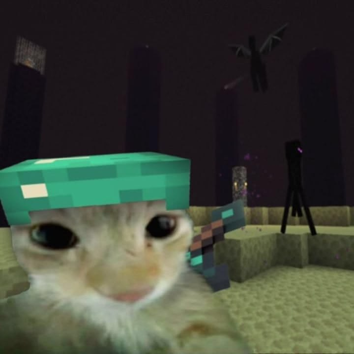
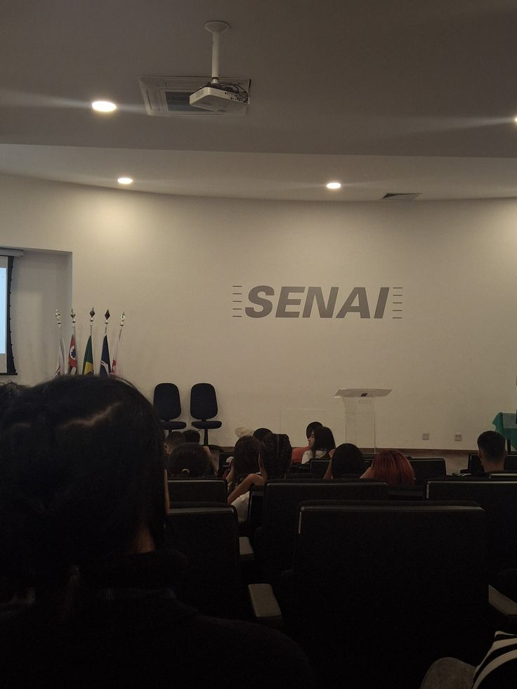
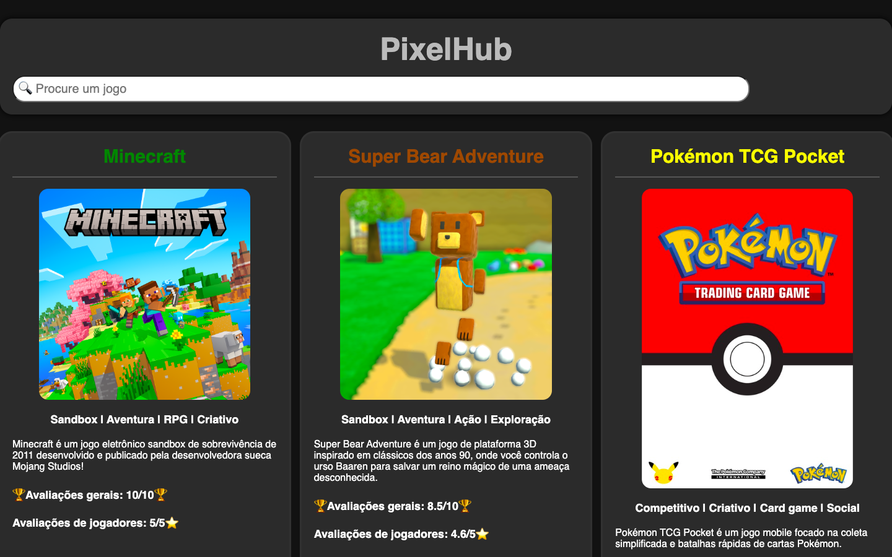
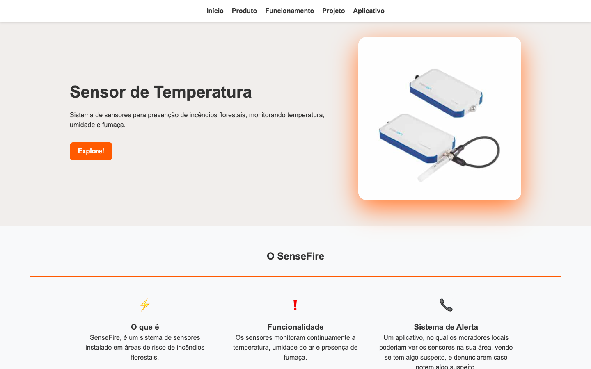
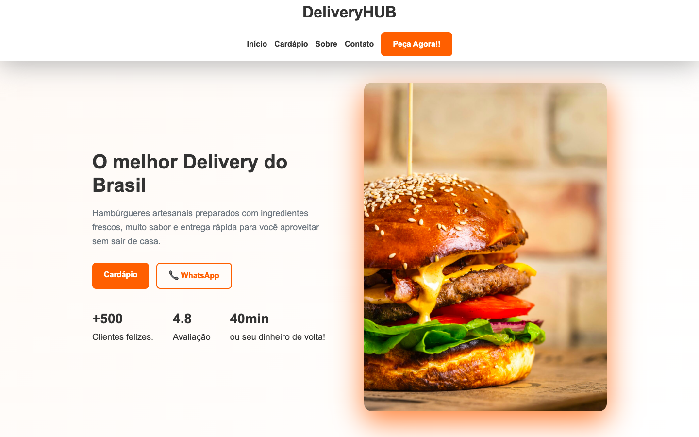
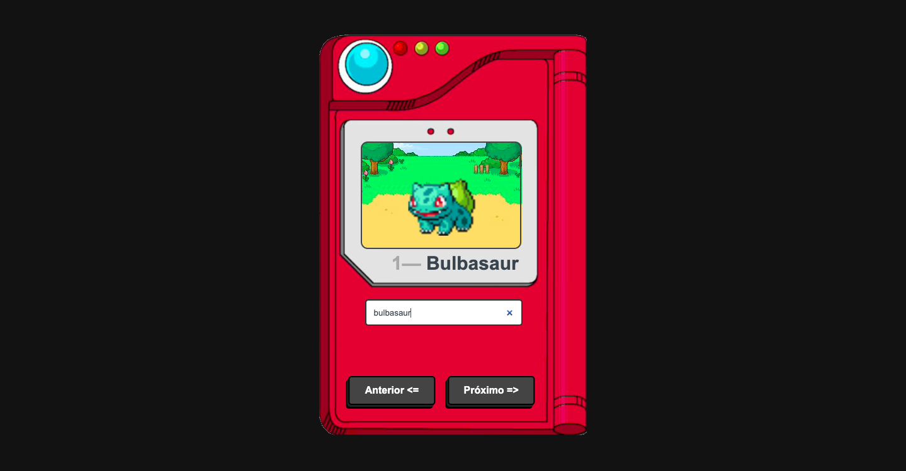

Alice Silva Pereira
Estudante de programação.

Estudante de programação.
Olá! Meu nome é Alice Silva Pereira, tenho 14 anos e sou estudante de programação. Estou sempre em busca de novos projetos e oportunidades para aprimorar minhas habilidades na área de desenvolvimento web.

Minha jornada na programação começou quando decidi aprender HTML, CSS e JavaScript por conta própria. Desde então, venho estudando, criando projetos e colocando em prática tudo o que aprendo.
Estou sempre buscando evoluir minhas habilidades e aprender novas tecnologias. Tenho interesse em seguir na área de desenvolvimento Full-Stack, unindo conhecimentos de front-end e back-end para criar soluções completas.
Meus projetos em cena!

O PixelHUB é uma página web em formato de catálogo de jogos, onde diversos títulos são exibidos por meio de cards gerados dinamicamente a partir de um array em JavaScript, apresentando informações como imagem, gênero, sinopse, avaliações e link para o site oficial. O projeto destaca conceitos de manipulação do DOM, organização de dados em objetos, responsividade e estilização inspirada na identidade visual de cada jogo.

O SenseFire é uma aplicação web institucional desenvolvida para apresentar um sistema IoT focado na prevenção e combate a incêndios florestais. A interface exibe o funcionamento e o fluxo de monitoramento dos sensores, a contextualização da solução tecnológica e relatórios em tempo real. O projeto se destaca pela construção de um layout adaptativo utilizando CSS Grid e Flexbox, media queries e interatividade com JavaScript.

O DeliveryHUB é um projeto de desenvolvimento front-end que simula o site de uma hamburgueria delivery. O objetivo é oferecer uma interface moderna, funcional e intuitiva para apresentar a marca, exibir o cardápio e facilitar a realização de pedidos por meio da integração com o WhatsApp. O projeto foi desenvolvido com foco na aplicação de HTML e CSS semântico, navegação por seções e boa experiência do usuário.

A Pokédex é um projeto que permite pesquisar Pokémons por nome ou número, navegar sequencialmente por botões de anterior/próximo e exibir informações e sprites animados dinamicamente. Praticou-se manipulação de DOM, consumo de APIs com fetch, programação assíncrona (async/await), tratamento básico de erros e criação de uma interface responsiva inspirada nos jogos clássicos.
Entre em contato via WhatsApp.